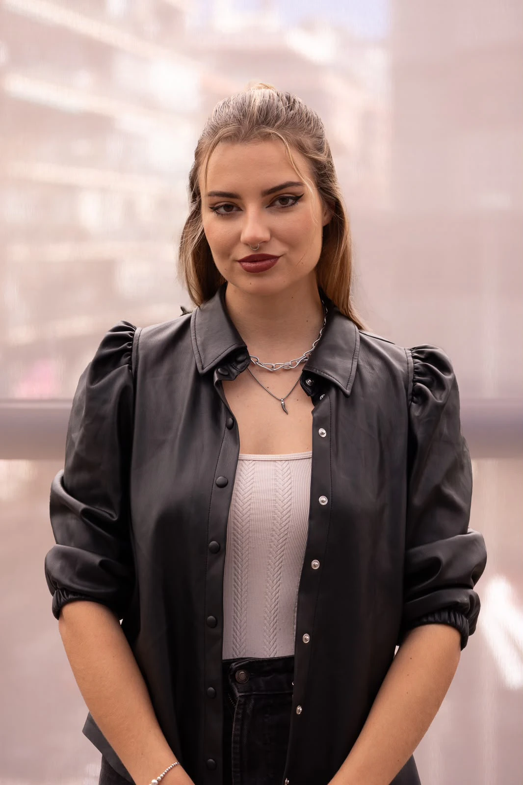

Perfil
SofíaChernikova

Periodista y reportera de televisión en Grupo Cadena Media desde 2024: estrenos, festivales, ruedas de prensa, entrevistas a artistas y figuras públicas. Fuera del directo dirige cortometrajes y fotografía la ciudad.